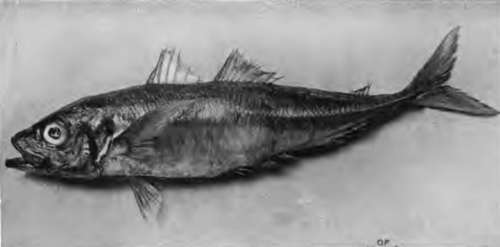
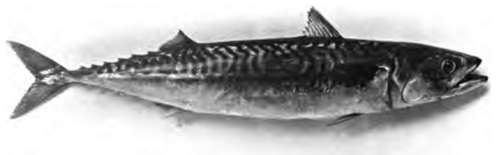

The Mackerel Family (Scombriae)
Description
This section is from the book "Fishing", by Horace G. Hutchinson. Also available from Amazon: Fishing.
The Mackerel Family (Scombriae)
Acanthopterygians with non-protractile, beak-like upper jaw; fusiform body, without or with very small, smooth scales; a spinous dorsal fin of slender spines, folding into a sheath, and longer soft dorsal and anal fins broken up into finlets; the pectoral fin pointed or falciform and inserted high up the side, and the caudal bifid or crescentic, formed of numerous rays deeply forked at the base and embracing the bone on which they are inserted. This family embraces about 50 species, represented in the seas of nearly the whole world. The mackerels and tunnies are its best-known representatives, the former coast fishes, the latter ranging through the open seas.
The Mackerel (Scomber scombrus) is too familiar a fish to require description, but as a second species of the same genus is sometimes found on our coasts, it is well to indicate its sure recognition-marks, viz., 11 to 15 (exceptionally 10 or 16) slender spines in the first dorsal fin (on the anterior part of the back, folding into a sheath), the diameter of the eye 1/5 to 1/6 the length of the head, and the absence of a swim-bladder. The waving or vermicular bluish black bands which adorn the back of the mackerel are not a constant specific character; some individuals have straight transverse stripes on the back, others are closely spotted (5. punctatus), while others still have been described as " scribbled " (S. scriptus). Looked upon by some authors as distinct species, these aberrant forms are now generally regarded as variations of the common mackerel, with which they occur promiscuously.1 I have also seen specimens which are uniform dark steel-blue above, without any markings, and Professor Collett remarks of Norwegian specimens that the colour of the back may sometimes be an unvaried black. The usual length of the mackerel is between 12 and 16 inches, but specimens 2 feet long are on record.
The mackerel is an inhabitant of the North Atlantic, being found on both its coasts, at some places and at certain seasons in extraordinary abundance. The limits of its range may be drawn between latitudes 36° and 71° in the Eastern Atlantic, between 35° and 56° in the Western Atlantic. The question of the migrations of this fish has been much discussed, and various extraordinary theories propounded to account for its movements. The general consensus is at present to regard the mackerel as a shore-loving fish, restricted to comparatively small distances in its wanderings, which appear to be regulated by the temperature of the ocean. As in other fishes moving in shoals, the sardine, for example, the irregular appearances of the mackerel cause a great disturbance in an important industry; on certain coasts the movements of the fish are quite uncertain, sometimes in one direction and sometimes in another, or the fish may disappear almost entirely for several years, subsequently reappearing after a lengthy absence. As observed by Brown Goode, who has paid special attention to this subject, it is not certain, of course, that this disappearance indicates an entire absence of the fish from the locality, but the fish may for some reason remain in the depth of the sea, or some change in the character of the animal life in it, which constitutes the food of the fish, may cause them to shift their quarters.
1 The structural and colour variations of the mackerel have formed the subject of two important recent papers by W. Garstang, Journ. Mar. Biol. Ass. (2), v. 1898, p. 235 ; and by H. C. Williamson, Ann. Rep. Fisher. Board, Scotland, xviii., pt. iii., 1900, p. 294.
55.- Scad Or Horse Mackerel
56.- The Common Mackerel.
As regards the movements on our coasts,1 these commence towards the end of winter, and by May and June large shoals of breeding fishes are to be found close inland. On the east coast of Britain, according to J. T. Cunningham, very few mackerel are taken north of Norfolk, whilst on the west coast of Scotland they are more plentiful. On the west coast of England they are taken regularly in summer in some abundance; at the Isle of Man the fishing lasts from May to September. In Ireland the principal mackerel fishing is in the south-west, but they are taken in summer all along the west coast.
1 Cf E, J. Allen, u Report on the Present State of Knowledge with regard to the Habits and Migrations of the Mackerel" Journ. Mar. Biol. Ass. (2), v. 1897, p. 1.
Mr. Cunningham has thus lately summarised what has been ascertained as to the migrations of the mackerel on the English coast:-" At Plymouth there is no month in the year in which mackerel are not taken, but they are scarcest in December and January. This is presumably the time when the fish are farthest from the coast, feeding in the more distant water where the temperature is higher. The few caught in those months in 1889-90 were taken fifteen to forty miles south of Plymouth. In February they become more abundant, the largest catches being 4000 to 5000, the fish still a long way off, twenty to thirty miles from Start Point. In March and April the fish are still a long way off, at least thirty miles from the Sound in March, twenty miles in April. In May, however, the fish approach the land while spawning, being taken at the end of the month only a mile or so outside the breakwater. In June they remain inshore, but these are the smaller fish, and much larger fish are caught off Ushant and the Scilly Islands. At this time fishing by hooks commences. In July and August mackerel enter Plymouth Sound, where they are taken by whiffing lines, and in good years by seine- After the beginning of September they leave the Sound, and are caught a few miles south of the Eddystone. In October and November they are caught from four miles south of the Eddy-stone to twenty or thirty miles south of Start Point. Off the coasts of Norfolk and Suffolk there is a valuable drift-net fishery for mackerel, which is carried on in May and June, and also from the 1st September to the middle of November. I do not know why they should be absent in July and August. It seems probable, however, that these fish only visit this part of the North Sea in summer, that they spawn there in May and June, and that they retire to the Channel in the latter part of November."
The mackerel is a pelagic - feeding fish, not a ground-feeder, like the cod, for instance; its food consists chiefly of small fish, spawn, and minute Crustacea-free-swimming organisms.
A second species, the Spanish mackerel or coly (S. coliaSy also called S. pneumatophorus), distinguished by the smaller number of spines (7 to 10) in the anterior dorsal fin, the larger eye (more than a quarter the length of the head), and the presence of a swim-bladder, appears irregularly on our coasts, although on the south coast of Cornwall, according to Couch, three or four hundred are occasionally seen at a time. The distribution of the Spanish mackerel is a much more extensive one even than that of the common species, as it occurs over the greater part of the Atlantic, from Great Britain and the extreme north of the United States to Brazil and the Cape of Good Hope, where it is very plentiful, as well as in the Pacific Ocean, whence it is on record from California, the Galapagos Islands, China, and Japan. Although of importance as a food-fish, the Spanish mackerel cannot compare with its more northern relative, its flesh being softer and decomposing more rapidly. Americans call this fish the chub, or thimble-eyed mackerel, the name Spanish mackerel being applied by them to another Scombrid, Scombromorus maculatus.
Continue to: